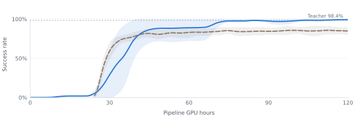

Abstract
Sim-to-real reinforcement learning (RL) has enabled impressive robotic behaviors, yet deploying policies directly from vision remains challenging. A common approach first trains a teacher policy with RL using privileged state observations, then distills its behavior into a vision-based student via supervised learning. However, the resulting student can substantially underperform its teacher. Directly training visual policies with RL offers a promising alternative, but learning task-relevant visual representations from scratch can be sample-inefficient, making one-phase visual RL intractable.
We propose DRIFT, a simple recipe for one-phase visual sim-to-real RL that combines frozen pretrained vision transformers with fast rasterized simulation. The policies transfer zero-shot to real hardware without demonstrations, teacher–student distillation, or real-world policy training data. Under matched architectures, observations, and compute budgets, DRIFT achieves 58.8% higher mean real-world success than two-phase distillation across three manipulation tasks. Despite similar in-distribution simulation success, direct RL generalizes substantially better under distribution shifts than policies trained through supervised distillation, suggesting that broader robustness contributes to stronger sim-to-real transfer.
One-phase RL learns robust behavior
One phase is enough for visual sim-to-real transfer.
Matched visual policy architecture, observations, simulation environment, and training compute. Different training procedures.
Simulation
Real world
Direct RL generalizes beyond its training distribution.
One-phase RL generalizes over a wide range of goals
Move the goal beyond the positions seen during training. Both policies perform well near the training region; their success differs farther away.
One Phase RL
Distillation
Robustness extends to changes in appearance and dynamics.
What makes one-phase visual RL work?
Frozen visual representations and fast rasterized simulation make more experience affordable.
Training throughput · relative to frozen ViT + ray tracing
Learning across three independent runs.
Push-T

Not all frozen visual encoders transfer equally.
— Not evaluated in the real world
Acknowledgments
Acknowledgments to come.